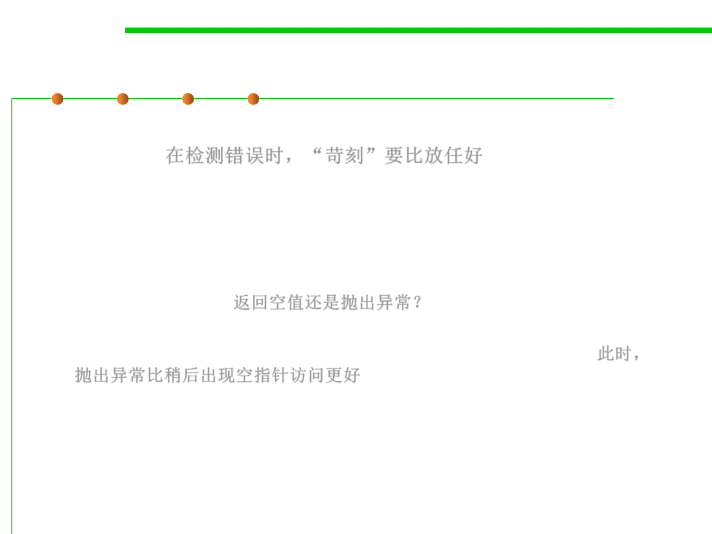

7.2 Error and Exception Handling
“Tough love” works better than indulgence
▪ When you detect an error, “tough love” works better than
indulgence. 在检测错误时，“苛刻”要比放任好
– Some programmers worry about throwing exceptions when they detect
errors.
– Maybe it would be better to return a dummy value rather than throw an
exception when a method is called with invalid parameters? For example ,
should Stack.pop return null, or throw an exception when a stack is
empty? Stack.pop 返回空值还是抛出异常？
– We think it is better to throw a EmptyStackException at the point of
failure than to have a NullPointerException occur at later time. 此时，
抛出异常比稍后出现空指针访问更好